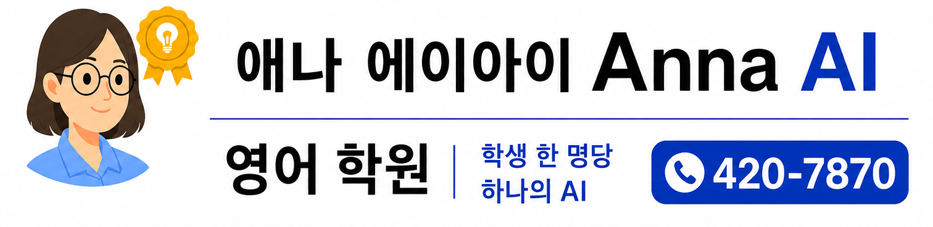
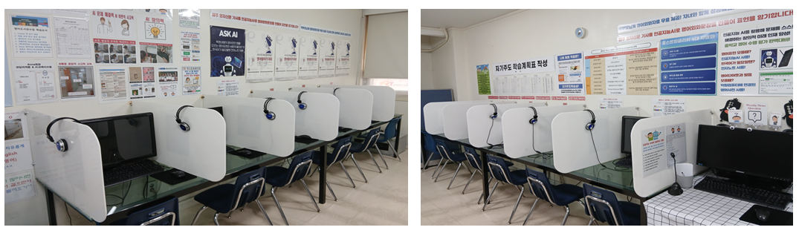
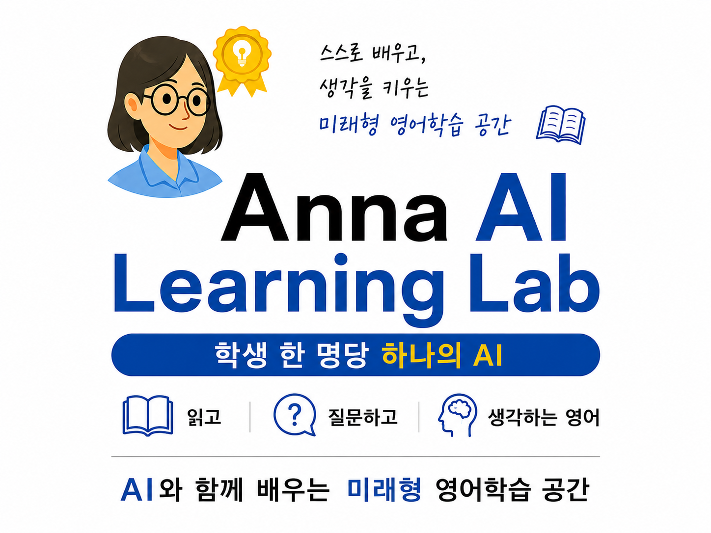

Q1. 왜 학원 이름을 Anna AI 영어학원으로 변경했나요?

Anna AI 영어학원
AI 시대에는 단순 암기보다 스스로 질문하고 생각하는 능력이 더욱 중요해지고 있습니다. Anna AI 영어학원은 영어 실력뿐 아니라 사고력과 질문하는 힘까지 함께 키우는 미래형 영어교육 방향을 담기 위해 학원명을 변경하게 되었습니다. 즉, 영어 자체보다 “영어를 활용해 사고하는 힘” 을 만드는 방향입니다. AI 시대 우리 학생들에게 필요한 영어 실력, 사고력, 질문하는 힘을 함께 키우는 미래형 영어학습 공간을 만들고자 합니다.
Q2. “학생 한 명당 하나의 AI”는 어떤 의미인가요?
학생마다 영어 수준과 학습 속도, 관심 분야가 다르기 때문에 AI를 활용하여 학생 개개인에게 맞는 질문, 표현, 학습 활동을 제공하겠다는 의미입니다. 이를 위해 학생들이 각자의 컴퓨터를 사용할 수 있는 랩실에서 수업이 진행됩니다. 즉, 학생 한 명당 하나의 AI와 함께 질문하고 탐구하는 미래형 영어 교육을 하겠다는 뜻입니다.
Q3. 왜 통합 수업을 하나요?
스토리북 수업+ e-book 영어도서관 수업+뉴스 회화&질문 수업을 AI와 연결하여 하나의 사고 흐름으로 지도합니다. 통합 교육이 실시되는 랩실 “Anna AI Learning Lab” 수업의 핵심은 단순히 “수업 3개(스토리북 수업+e-book 영어 도서관 수업+ 뉴스 회화&질문 수업)를 한 교실에 넣었다”가 아닙니다. 핵심은 “읽기 → 질문 → 사고 → 표현 → AI 활용 → 자기주도 학습” 이 하나의 흐름으로 연결된다는 점입니다. 예를 들어 동화책을 읽는다→ 실제 세상의 뉴스와 연결한다→ 질문한다→ 자기 생각을 말한다→ AI와 대화하며 확장한다. 이 흐름이 있어야 “영어를 사용하는 사고력”이 만들어집니다. 이건 단순 암기형 영어와 완전히 다릅니다. AI 시대에는 “질문하는 능력”이 핵심입니다. 앞으로는 정보 찾기,번역,단순 문장 만들기,이런 건 AI가 다 해줍니다. 그런데 AI에게 무엇을 질문할지,어떻게 생각할지,어떻게 연결할지, 이 능력은 인간이 해야 합니다.
Q4. 원장님 혼자서 통합 수업이 가능한가요?

Learning Lab 교실 모습

Learning Lab 교실 안내판
원장 혼자서 수업을 지도하는 것이 아니라 AI와 협력해서 수업을 진행하기 때문에 가능합니다. 즉, 수십명의 AI 조수와 같이 수업하는 구조입니다. 수업시간에 랩실 오른쪽에서는 동화책 수업이 진행되고 왼쪽은 리딩게이트 온라인 도서관 수업과 뉴스회화 수업이 진행됩니다.
Q5. 왜 원장님이 통합 수업을 하셔야 하나요?
통합 수업을 하려면 아래와 같은 능력이 요구됩니다.
1) 영어실력 : Macquarie University 영어교육 석사, 서강대 국제대학원 석사
2) 영어교육 경력: 20년 이상 연구개발, 인천시 교육 연수원 초/중등 영어교사 직무심화연수 강사
3) 뉴스 지식 : The Junior Herald 영자신문사 NIE뉴스 학습자료 6년간 제작, 현)네이버 프리미엄콘텐츠 뉴스회화 학습자료 연재, 현)클래스 101 융합사고력 영어교육 강사
4) 온라인 도서관 지도 경력 : 2013년부터 2026년 현재까지 리딩게이트 지도
5) 융합적 사고력 : 영어교육 석사와 국제대학원 국제통상 석사
6) AI지식 : 코딩 3급 자격증, NIPA 인공지능교육 수료
7) 학생 파악능력 : 2013년부터 2026년 현재까지 원장으로 학원운영,
이 7개의 능력을 모두 갖춰야해서 원장이 합니다.
Q6. 뉴스 회화&질문 수업은 어떻게 진행되나요?
학생들은 흥미로운 뉴스 영어회화를 듣고, 읽고, 핵심 단어와 표현을 학습한 뒤, 영어 질문을 만드는 샘플인 “질문 틀”을 참고해서 뉴스 회화와 관련된 질문을 만듭니다. 이때 질문을 먼저 한국어로 생각하고 AI를 사용해서 영어 질문으로 바꿉니다. 만들어진 영어질문들은 암기해서 발표합니다.
Q7. AI를 영어수업에 어떻게 활용하나요?
AI를 단순히 답을 알려주는 도구로 사용하는 것이 아니라, 학생들이 영어로 질문하고 스스로 사고를 확장할 수 있도록 돕는 학습 도구로 활용합니다.
Q8. AI 활용 수업이 아이들에게 어려운 것은 아닌가요?
학생 연령과 영어수준에 맞춰 개개인에 맞는 학습량을 정하고 수업을 진행합니다. 중요한 것은 AI를 활용해 학생들이 스스로 생각하고 질문하는 경험을 만드는 것입니다.
Q9. 문법 수업도 계속 진행되나요?
네. 학생 수준별 체계적인 문법 학습은 계속 진행됩니다.
Q10. 학생들이 바뀐 수업 방식에 잘 적응할까요?
6월1일부터 변화되는 수업방식에 대해 5/26(화)~5/29(금) 일주일간 안내문을 랩실에 부착하고 매 수업시간마다 원장이 모든 학생들에게 반복해서 자세히 설명하겠습니다.
Q11. 수업시간은 그대로인가요?
현재 수업시간 그대로 등원하면 됩니다. 일찍 오는 학생들은 예전의 동화책 교실에서 조용히 공부하면서 기다리면 됩니다.
Q12. 결석생 보충수업은 어떻게 하나요?
6월1일부터 보충수업은 화/목 저녁 7시~8시에 진행합니다.
Q13. 리딩게이트 주소도 바뀌나요?
네. 학원 이름이 바뀌어서 도메인 주소도 바뀝니다. 변경전까지 현재 주소로 공부하면 됩니다. 추후 다시 리딩게이트 주소를 알려드리겠습니다.